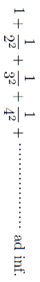
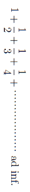

科学の方則は物質界における複雑な事象の中に認められる普遍的な連絡を簡単な言葉で総括したものである。事実の言い表わしであって権利も義務も訓戒も含まれていない。しかし今ここで方則の定義や法律と方則との区別などを
喋々しようとは思わぬ。ただかくのごとき方則というものが如何にして可能であるかという事に関して浅薄ながら半面観を試みたい。
方則が可能であるためには宇宙の均等という事が必要である。時と空間に対して不変な事実が認め得られる事が必要である。かくのごとき事実が
吾人に認め得られるというのは不思議な事ではあるまいか。
華厳経に万物相関の理というのが説いてあるそうである。誠に宇宙は無限大でその中に包含する万象の数は無限である。しかしてこれらは互いになんらかの交渉を有せぬものはない。風が吹いて桶屋が喜ぶという一場の
戯談もあながち無意義な事ではない。厳密に云えば孤立系（isolated system）などというものは一つの抽象に過ぎないものである。例えば今一本のペンを床上に落とせば地球の運動ひいては全太陽系全宇宙に影響するはずである。一本のマッチをすればその光は全宇宙に
瀰漫してその光圧は天体の運動に幾分の変化を生じなければならぬはずである。少なくも吾人の科学に信拠すればそうなるはずである。また全天体の片隅で行われているあらゆる変化は必ず吾人の身辺にも幾分の影響を及ぼしているはずである。宇宙間無限の物象の影響を受けている身辺の現象について如何にして有限な言葉をもって何事かを云い表わす事が出来るであろうか。いわんや無限無窮の空間と時とに通じて普遍的な方則などというものが如何にして可能であろうか。
これは必ずしもパラドックスではない。
数学の方で
収斂級数というものがある。第一項に第二項を加え更に第三第四と無限の項を附け加えると、その総和は有限なものになる。例えば

のごときものがある。数において無限なものが蓄積してもその結果は有限である。しかしかくのごとく収斂するためには逐次の各項の間に一定の条件が満足されなければならぬ。同じような級数でも、

は無限大となる。
掌中のペンに働く力は種々ある。第一に重要なものは地球の全質量がこれに及ぼす重力である。すなわち普通にいわゆるペンの目方である。
精しく云えばこの中には身辺にある可動性の器物や人間や一切のものの引力も加わっていてこれらが動けばそれだけの影響はあるはずである。ただこれらの影響は地球全体に比べて小さい事も確実である。次には雰囲気の引力から起るものであるが、これは地面にある物に対しては大体において零となるはずである。次には月、太陽、諸遊星を始めあらゆる天体の引力も加わる。これらは質量が大なる代りに距離が遠いので影響はやはり小さいものである。例えば比較的最も著しい月の影響でも目方の変りは百万分の一を超えることはない。恒星はその数においては甚だ多いが、その距離の莫大なのみならずまたその引力の方向が区々であるために総和は幾何学的の和である。仮りに恒星の全質量が天球上に一様に分布されているとすれば総和は零となる。これに反して恒星が地球を通ずる一直線上に羅列していたらばどうであろうか。もし各個の質量が同一で間隔も同一ならば、これらの引力の総和は丁度前に出した収斂級数で表わされ従って有限なものになる。もしも重力が距離の自乗に反比例せずして距離自身に比例するのであったら結果は収斂しないのである。
もし物質間の引力が距離によらず同一であったり、あるいは距離の大なるほど大であったと仮定したら、天地万物の運動はすべて人間には
端倪する事の出来ぬ
渾沌たるものになるであろう。如何なる強度の望遠鏡でも
窺う事の出来ぬような遠い天体の上に起る
些細な出来事も直ちに地球上の物体に有限な影響を及ぼすとなれば、人間の見た自然の運動にはおそらくなんらの方則を見出すことも出来ないだろう。
否方則といえばただ偶然の方則が支配するばかりであって要するに科学は成立しそうもないのである。
上に述べたペンに働く力はこれに止まらぬ。ペンに微量の荷電があれば、あるいは自身にはなくても他に荷電体があれば、その感応によって周囲の物との間に引斥力が起る。また地球磁場等の影響はこれに
偶力を及ぼす事になる。その磁場は諸天体にも感応し反対に諸天体の磁場もまたこれに影響する。仮りに周囲や天体の荷電や付磁がことごとく恒同で既知であっても事柄は複雑であるのに、いわんやこれら相互の位置状態の変化から生ずる相互の影響を考えなければならぬとなればいよいよ面倒な事になってしまう。もしもこれらの影響が収斂級数を作らなかったなら果してどうであろうか。
ペンに働く力はまだこれに限らぬ。空気の浮力はかなりの影響がある。しかしてこれにはその室内の気温、気圧、湿度が直ちに関係する。また微弱な気流でもその落下の方向速度を変える事は明白である。しかるにこれらの温度や気流等はまた室内のみならず室外全宇宙の現象の影響を受けぬ訳には行かぬ。なおこのような影響を及ぼすものを列挙すれば巻を
更えても尽す事は出来まい。
それならばペンの目方を指定しその落下の状況を予知するには、単に緯度や高さや温度や気圧を知るのみならず全宇宙の現状を
知悉する事が必要であろうか。力学物理学の教科書を
繙いてみると極めて簡単な言葉で重力の方則や落体運動の方則が述べてある。吾人はこれらの方則に信頼して目方を比較し時計を使用して別に著しい不都合を感じない。これは不思議ではあるまいか。もしこれが何でもない事で分り切った事であったならば、世俗の人が科学を誤解し学者を
唐変木視する気遣いは更にないはずである。
次にゼンマイ
秤で物の目方を
衡る場合を考えてみよう。不断に変化する宇宙全体が秤皿に影響してその総効果が収斂しなかったら一物の目方という定まった観念を得る事は出来まい。これだけでも第一目方とか質量とかいう言葉は意味を失うに相違ない。がただそればかりでない。
前に挙げた例では歴史の影響という事があまり問題にならなかった。すなわち現在の状況が主として現在だけで定まる場合であった。しかしゼンマイ秤の場合にはもう一つ面倒な歴史という事が現われて来るので、事柄は更に紛糾の度を加えて来る。仮りに目方の方が不変であるとしても、これを比較すべき
弾条の弾性というものがなかなか厄介千万なものである。これは第一、温度によって変化する。これは主要な影響であるが、なお少し立ち入って考えると、これは気圧にも湿度にもその他雑多の外界の状況によって変り得べきものと考えられる。また肝心の温度なるものがある度以上には正確に測れぬものである。もしも温度の影響が大きくその他の微細な雑多の影響が収斂しなかったら、ゼンマイ秤で目方を測るのは
瓢箪で
鯰を捕える以上の難事であろう。今仮りに更に一歩を譲ってこれらの困難を切り抜けられるとして見ても、まだ弾性体に通有な「履歴の影響」という厄介な事が残っている。
履歴の影響とは何ぞや。定まった弾条に定まった重量を吊し、定まった温度その他の同時的条件を一切一様にしても、その長さは一定しないのである。すなわち過去において受けた取扱い如何によって種々の長さを与えるのである。一
匁の
分銅を一分間吊した後と、一時間あるいは一昼夜吊しておいた後とは幾分の差がある。またあらかじめ百匁を五分間吊した後十匁をかけたのと、一匁を同じく五分吊した後同じ十匁を懸けたのとでも若干の相違がある。また温度をいったん百度まで上げて十度に冷却したのと、零度から十度まで温めたのとでも同じではない。かくのごとき履歴の影響は厳密に云えばいつまでも全くは消滅しないものと考えられる。百年前の取扱いも
些少ながらその印象を止めているはずである。それでただ現在の重量や温度その他の外界条件一切を羅列しても一条の弾条の長さは決定するものではない。弾条に限らずすべての弾性体の形状大小についても全く同様である。従って一つの針金の長さなどという言葉自身が既に無意味ではないまでも漠然たるものになりはしまいか。この曖昧さ加減を最も明らかに吾人に示すのは綿糸の
撚り糸である。一条の撚り糸を与えられてその長さを精密に測ろうと企てた人は、ここに述べた困難を切実に味わう事が出来ようと思う。約三尺の糸は測る度ごとに一
分二分、時には寸余の相違を示すのである。それにもかかわらず三尺の糸と云えば吾人の頭脳には一定の観念を与えるような気がして言葉咎めをされる
虞は先ずない。これは何故であろう。もしこれが分り切った事であれば、すべての世人は皆科学者でなければならない。
撚り糸も針金もあらゆる弾性体
否形状大小を備えた物体は皆同様である。もしも履歴の影響が時とともに速やかに漸進線的に収斂しなかったらどうであろうか。すべての物体は雲煙のごとくまた妖怪
変化と類を同じうするだろう。
重量約一匁とか長さ約一寸といえば通例
衡り方
度り方の粗雑な事を意味する。丁度一匁とかキッチリ一寸など云えば大変に正確に聞えるが、精密とか粗雑とかいうのも結局は相対的の言葉である。人智の測り得る所いずれか粗雑ならざらんやである。丁度と云いキッチリというのも約というのも根本的の相違はない。一尺の竹の尺度を百本比較すれば百本ながら違っている。丁度一尺という長さは抽象であって現実にはない。一メートルの標準尺度の二つの目盛りの中心の間を単位とすれば一メートルの尺度はそれただ一つである。そして頼みに思うその唯一の長さは、実は前に煩わしく述べたような訳であまり一定なものではないのである。
有難い事には万物相関の影響は収斂級数で表わされ、履歴の影響は漸進的に消滅し、しかして人間の官能には限界が存している。それで一匁とか一尺とかいう言葉が通用して、1.0023でも1.0012でも一尺
差である。天気がどんなでも一尺差はやはり一尺差であって、呉服商が一々寒暖計と相談する必要がない。物理学者が尺度の比較をする時には寒暖計を
八かましく云っても、天王星やシリアスの位置を帳面につける必要はまだない。もしもそうでなかったらたとえ一メートルの標準尺度をカドミウム線の波長と比較しようとしても光の波長自身がどうして頼みになるであろう。
測定という事が可能であり、測定した量の間に幾分でも普遍な関係が見出され簡単な言葉で方則が述べ得られるのは、
畢竟孤立系というものが考えられるという事にもなる。また無限の項から成る級数の初めの数項以下を省略しても、吾人の官能上差別を感じないという事にもなる。あるいは自然界の現象が有限な項から成る方程式である程度まで代表され得るというのである。無限にあるべきはずの残余の項の効果が微小となるのは、あながち最初に出した簡単な級数のようになるというのではない。
彼の級数は収斂の仕方の遅いものである。ここで云う残余の項は多くはもっと速やかに急に収斂するのである。また一つ忘れてならぬ事はこれらの微小な残余の項が多くはいわゆる偶然の方則に従って分布され、プラスとマイナスとが相消去するために結果が蓄積せぬ事である。一定の位置並びに寒暖計の示す温度において測った金属棒の長さは、不可測的の雑多な微細な原因のために、種々異なる価を与えても多数の測定の平均はある程度まで一致すると考えられるのはやはりこの偶然の御蔭である。こういう風に考えれば長さという言葉の意味もほぼ定まって来る。
こういう風に考えて来ると、方則というものの見方が色々あるように思われる。吾人がある有限な条件を限ってこれを指定し、他の影響は全くないと仮定した場合の結果を云い表わすものとも云われる。これは簡単明瞭であるが抽象的である。この考えでは方則を云い表わす方程式は初めから有限の独立変数を含む有限の項から成るものである。しかし厳密に云えば、かくのごとき抽象的の状況は実現する事の出来ぬものである。もう一つの見方は、この方程式の後尾へそれ自身に小さくまた沢山の場合の平均が零に漸進するような無限級数を附加して考えるのである。平たく云えば、方則というものを一種の平均の近似的の云い表わしと考えるのである。そうすれば方則というものはよほど現実的な意味を持つようになって来る。このような区別は甚だつまらぬ事のようであるが、自分はあながちそうとは思わない。
ガス体の方則などはガスを均質な連続体と
見做す時は至極簡単な意味のものであるが、これが沢山な分子の集合体であると見做せば、これらの方則は複雑多様な関係の平均の云い表わしという外には意味はなくなってしまう。電気のごときも近来量子的のものと考えられる以上は、例えば静電気分布に関する旧来の理論も畢竟一種の統計的の意味しかないようになって来る。光などでも単一な球面波のごときものは実現し難いものであって、実際の光はやはり複雑多様な要素の集団であって光の強度というような概念も多くはただ平均的の意味を
有つのみである。
しかし人間が超顕微鏡的の眼を有っていない以上は分子や電子を直接見る事が出来ない。それで多くの場合にはこのようなものを考えなくて
却って事柄は簡単に明瞭に処理されるのである。もし量子的の考えを用いずしてすべての現象が矛盾なしに説明され得るのであったら、何を苦しんで殊更に複雑な統計的の理論を担ぎ出す必要があるであろうか。数学的の興味は十分にあるとしても自然科学とは交渉の少ないものであろう。実際は幸か不幸かそうでない。化学的現象は勿論の事、ブラウン運動等の研究はますます分子原子の実存を証するようになり、真空管や放射性物質の研究はどうしても電子の存在を必然とするようになって来た。人間が簡単を要求しても自然はそれには頓着しない。ただ複雑な変化の微小な事、またポアンカレーの
謂うごとく複雑さが十分複雑であるために「偶然の方則」が行われ、多くの場合には簡単な平均的の云い表わしを抽象的に考える事が出来るのであろう。
それで方則の云い表わす言葉は不変でもその意味は場合によって色々に考えられるのである。これは方則の中に含まれた概念の変化であって、それが元来云い表わす当面の事実の変化ではない。ただこの概念の変化によって新しい事実の発見されるごとに一々新しい方則を捻出する事が避けられるのである。
一口に方則とは云うものの物理の方則でも色々の種類がある。フックの方則、ボイルの方則などのように適用の範囲の明白に限定されているものもあり、重力の方則、クーロンの方則のごときよほど普遍的なものもある。近似的の方則をどこまでも適用せんとして失敗し、「理論と実際の
齟齬」という標語を真向にかざして学者を毛嫌いする世人の少なくないのは、これらの方則の近似的な事を忘れているためである場合もある。それは別問題として、厳密な意味において普遍的な正確な方則が可能であろうか。方則というものの成り立ちが前に述べたようなものであってみれば、すべての方則は近似的のものと云わなければなるまい。少なくとも近似的で無いという証拠はないようである。重力の方則は海王星の軌道以内には適用されるが、固体分子間の距離においても同様であろうか。この距離においては吾人は種々の場合に別の方則に従う凝集力を考えたくなる。この凝集力と重力とは如何なる関係があるだろうか。荷電導体内部における電場の零なる事からクーロンの方則の厳密な事を証するが常であるが、吾人の実験し得る導体の大きさに制限のある事を忘れてはなるまい。この方則が電子間の距離まで適用されるだろうか。銀河の近辺までも同様であろうか。これに対する確答はまだない。
これらの引斥力が自乗反比例という簡単な言葉で表わされるのは驚くべき事であるというよりは、むしろかくのごとく簡単に云い表わし得る言葉があるのが驚くべき事だとピアソンは云っている。しかしあるいはこれらの力の方則を表わすべき数式の第一項に対して第二項以下の小さい事に驚くと云わねばならぬ事になりはしまいか。少なくともそういう風に考える方が自然科学者の今日の立場としてむしろ妥当ではあるまいか。しかしこの疑問以上に立ち入る事は科学者の領域以外に踏み出すと思う。
こんな事を書いて公にしようというについて一つ考えなければならぬ事がある。すなわちかくのごとき漠然たる議論を並べた結果、一部の読者には誤解を生じまた一部の学者からは独断の邪説でとして攻撃される
虞が甚だ少なくないように思う。ある読者はますますあるいは始めていわゆる精密科学の基礎の案外薄弱な事を考えて、その価値と効果を疑うかもしれない。しかし自分がここまで述べて来た事は正にこの点について疑いを解かんがためである。この疑いに対しては今まで述べた事をもう一遍繰返す外はない。そしてかくのごとき基礎の上に立った学問の効果は眼前の科学的文化である事を附け加えたい。次に学者の方から見れば、重力の方則等までも近似的と見做したりするような考えは幾多の非難があるかもしれない。実際こういうような考えはある意味において甚だ危険である。往々考えが形而上的に走り、
罷り違えば誇大妄想狂となんら選む所のないような夢幻的の思索に陥って、いつの間にか科学の領域を逸する虞がある。この意味の危険を避けるために、どこまでも科学の立脚地たる経験的事実を見失わぬようにしなければならない。論理の糸を
手繰って闇黒な想像の迷路を
彷徨しているうちにどこかで新しい出口を見付け、そこで事実の日光にまともに出くわすまでは何事も主張する権利はない事を心得ていなければならない。しかし懐疑と想像とは科学の進歩に必要な衝動刺戟である。疑い
且つ想像をめぐらす前に、先ず現在の知識の限界を
窮めなければならぬ事は勿論である。現在科学の極限を見極めずして
徒らに奇説を
弄するは白昼
提灯を照らして街頭に叱呼する盲者の亜類である。方則を疑う前には先ずこれを熟知し適用の限界を窮めなければならぬ。その上で疑う事は止むを得ない。疑って活路を求めるには想像の翼を鼓するの外はないのであろう。
現在の科学の基礎方則を疑うのは危険であっても、社会主義が国家主義に危険であったり青年の思潮が老人に危険であるのとは趣を異にする。この説明は歴史がしてくれるのである。プトレミー派の学者は地球を不動と考えて、太陽は勿論其の他の遊星も皆その周囲を運行するものと考えた。後にコペルニカスの地動説が出て前説よりも遥かに簡単に天体の運動を説明し得る事が分り、ケプレル、ニュートンを経ていよいよ簡単な運動の方則で天体の諸現象を述べ尽す事が出来た。しかし今日ではある簡単な問題を考える場合には依然としてプトレミーの考えを使用して怪しまない。またニュートンの力学の基礎は
輓近相対原理の発展につれてぐらついて来たには相違ない。しかしこの原理の研究が
何程進んでも、ニュートンの力学が廃滅に帰するという訳ではあるまい。日常普通の問題にこれを応用して少しも不都合はないはずである。精巧な測器が具備している今日でも、場合によって科学者が指や歩数をもって長さを測る事を恥としない。それで科学の方則が如何に変っても、人間社会の幸福は損われぬのみならず増すばかりである。科学がこれによって進歩する事は申すまでもない。
これに聯関して起る問題は科学の基礎や方法に関する事柄を初学者に吹き込む事の可否である。中学校で物理学を教える場合に、方則の成立や意義や弱点を暗示するのは却って迷いを生じ誤解を起すという説もある。自分は教育家でないが、ただ自分一己の経験から推して考えれば、既に初学の時代にこの種の暗示を与える方が却って理解と興味を助長し研究的批評的の精神を
鼓吹するのではないかと思う。実際、物理学教科書にある方則と寄宿舎の規則との区別を自覚している生徒がどれだけあるか疑わしい。方則が日常身辺に行われている現象と如何なる交渉があるかも呑込むのは容易でないように見える。今これらの事柄を生徒に教えようとすれば如何に教うべきかという事が困難な問題である。しかし中学校では既に倫理道徳などという事すら教えているではないか。生徒の老成後の倫理道徳観が中学校で教わった所と如何ほど懸隔しても仕方がない。やはり中学校の倫理は無益ではない。自分は科学というものの方法や価値や限界などを多少でも暗示する事が却って百千の事実方則を暗記させるより有益だと信じたい。そうすれば今日ほど世人が科学の
真面目を誤解するような
虞が少なくなり、また一方では科学的の研究心をもった人物を養成するに効果がありはしないかと考えるのである。
（大正四年十月『理学界』）